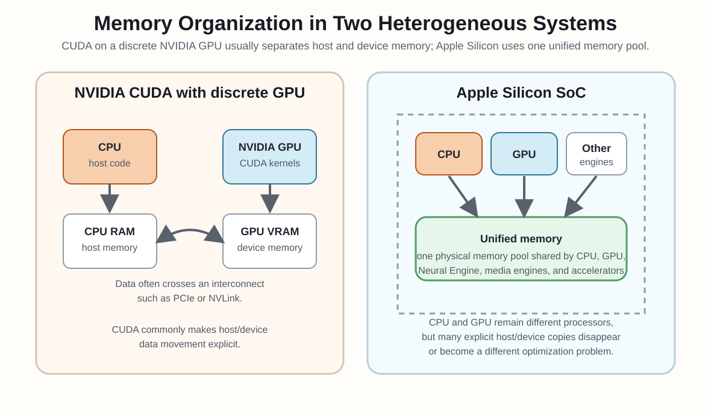

Learning outcomes
Scope
This module introduces the first fundamental concepts needed to understand what a GPU is, why parallelism matters in programming, and how CPU and GPU cooperate in heterogeneous applications.
0. Introductory Summary
0.1 Why parallel programming became unavoidable
Many high-value applications need more execution speed, memory bandwidth, and memory capacity than a single processor core can provide. For many years, sequential programs became faster almost automatically as CPUs gained higher clock frequencies and more aggressive internal hardware. That path slowed around 2003 because power consumption and heat dissipation made continued clock-frequency growth impractical.
Modern processors therefore rely on multiple cores and, in heterogeneous systems, on specialized accelerators such as GPUs. This changes the software contract: performance improvements depend on exposing enough independent work for multiple execution units to run at the same time. Parallel programming has become a mainstream requirement because applications must be structured as cooperating threads or tasks to keep benefiting from current hardware.
0.2 What GPGPU means
GPGPU means general-purpose computing on graphics processing units. The idea is to use the GPU not only for rendering images, but also for numerical computation such as linear algebra, simulation, image processing, and machine-learning workloads. Before CUDA, developers sometimes used graphics APIs such as OpenGL as an indirect compute interface by encoding data as textures and computation as shaders. That approach worked for some problems, but it was awkward because OpenGL was designed for graphics rendering, not for general-purpose parallel programming.
CUDA did not replace OpenGL as a graphics API. OpenGL remains a rendering interface, while CUDA is a general-purpose GPU computing platform for NVIDIA GPUs. What CUDA largely replaced was the old practice of forcing general-purpose computation through graphics APIs when the actual goal was not graphics, but parallel numerical work.
1. Fundamental Aspects of GPUs and CPUs
1.1 Difference between serial, parallel, and heterogeneous computing
Serial computing advances one control flow over one working element at a time. Parallel computing exposes many independent operations so multiple execution resources can work simultaneously. Heterogeneous computing combines different processor classes, typically CPU and GPU, so each one executes the portion of the application that matches its strengths.
Since the early 2000s, processor design has followed two complementary directions. Multi-core CPUs preserve strong sequential performance by using a moderate number of sophisticated cores, large caches, branch prediction, and control hardware that reduce the latency seen by individual instruction streams. Many-thread GPUs prioritize total throughput by using a much larger number of simpler execution lanes and by relying on abundant parallel work to keep the hardware busy.
The performance gap between CPU and GPU peak throughput comes from this design tradeoff. A chip has a limited physical silicon area, so architects must decide how much of that area is dedicated to cache memories, branch prediction, instruction control, arithmetic units, registers, load/store units, and memory channels. CPUs spend a large fraction of their chip area making a few instruction streams progress quickly through complex, irregular control flow. GPUs spend proportionally less area on large caches and branch-prediction mechanisms, and more area on floating-point execution units, many parallel lanes, high register capacity, and memory access bandwidth.
This does not mean GPUs have no caches or control logic. It means their area budget is biased toward throughput rather than single-thread latency. A GPU may let one individual operation take longer than on a CPU, but it can keep many more operations in flight at the same time. A heterogeneous application uses the CPU for orchestration and irregular sequential regions, then launches GPU work for numerically intensive regions with enough independent operations to fill the device.

1.2 Role of the CPU and the GPU in a modern application
The CPU usually manages control flow, operating-system interaction, orchestration, and irregular logic. The GPU is used for throughput-oriented regions with large amounts of regular work across data collections such as vectors, matrices, grids, images, or batches.
1.3 Why more speed and more parallelism are needed
Workloads in scientific computing, data analytics, simulation, media processing, interactive graphics, and AI often exceed what single-thread latency improvements can deliver. The practical route to more performance is to exploit more parallel work and more memory bandwidth instead of expecting one core to become infinitely faster.
More speed is not useful only for making existing programs finish sooner. It also makes new application behavior possible: larger biological simulations, more realistic physical models, richer image and video processing, higher-resolution interfaces, real-time computer vision, and digital twins that can predict stress, damage, or deterioration before an object is tested physically. Many of these workloads process large collections of similar data, so independent pieces of work can run at the same time.
Parallelism can produce very large speedups when most of the execution time belongs to data-parallel regions, but the result is not automatic. The program must expose enough independent work, and data delivery must be managed carefully enough that the GPU is fed with useful work instead of waiting on memory transfers. CUDA is useful in this context because it gives programmers a direct model for expressing parallel work and controlling the movement of data between CPU and GPU.
Speedup. Speedup measures how much faster one execution is than another. It is defined as speedup = old execution time / new execution time. For example, if a program takes 200 s on a serial CPU version and 10 s on an accelerated version, the speedup is 200 / 10 = 20x. A 20x speedup means the accelerated execution completes the same work in one twentieth of the original time.
Amdahl's law. The speedup of the whole application is limited by the part that remains serial. If the original execution time is normalized to 1.0 and only 30% of the time is parallelizable, then the serial part is 70%, or 0.70. A 100x speedup applied only to the parallel part reduces that part from 0.30 to 0.30 / 100 = 0.003. The new total time is therefore 0.70 + 0.003 = 0.703. The application has saved 1.000 - 0.703 = 0.297, which is a 29.7% reduction in total execution time. The overall speedup is the old time divided by the new time: 1 / 0.703 = 1.42x. In formula form, speedup = 1 / ((1 - P) + P / S), where P is the parallelizable fraction and S is the speedup of that fraction.
Memory bandwidth optimization. Another major limit on application speedup is how quickly data can be read from and written to memory. A straightforward GPU parallelization may create many threads but still saturate DRAM bandwidth, so the program becomes memory-bound instead of compute-bound. In that case, adding more arithmetic units or launching more threads does not help much unless the code reduces expensive off-chip memory traffic.
Consider a simple vector operation such as C[i] = A[i] + B[i]. Each element requires only one arithmetic operation, but it also requires reading A[i], reading B[i], and writing C[i]. A GPU can run thousands of threads that are ready to perform the addition, but all those threads also request data from DRAM. Once the memory channels are saturated, additional threads cannot make the program much faster because many execution units wait for data instead of doing arithmetic. This is why direct parallelization can deliver a useful speedup, such as about 10x, while still falling far below the GPU peak-compute speed.
GPU optimization often means reorganizing the computation so data loaded from DRAM is reused from faster on-chip memories such as shared memory, caches, or registers. This can greatly reduce the number of DRAM accesses, but it introduces new constraints: on-chip memory has limited capacity, data must be staged carefully, and thread cooperation may require synchronization. The goal is not simply to move work to the GPU, but to structure memory access so the GPU spends most of its time doing useful computation rather than waiting for data.
CPU performance also matters when evaluating speedup. Some parts of an application are naturally irregular, sequential, or control-heavy, and CPUs may execute them very efficiently. A good heterogeneous implementation gives the CPU those regions and uses the GPU for the parts with enough regular parallel work and enough data reuse to justify the transfer and memory-management cost.
1.4 Examples of real applications accelerated with GPUs
GPU acceleration is common in linear algebra, image processing, physical simulation, rendering, molecular modeling, recommendation systems, and deep learning. These applications benefit because the same or similar operations are repeated across many data elements, which maps naturally to the GPU execution model.
1.5 Benefits and limits of the parallel approach
The main benefits are higher throughput, better scalability on data-parallel workloads, and access to very high memory bandwidth. The main limits are the sequential fraction of an application, data transfer overhead, irregular control flow, synchronization costs, and the engineering complexity required to use the hardware well.
1.6 Main difficulties in parallel programming
Parallel software is harder to design, debug, and measure than serial software. The programmer must reason about data partitioning, mapping of work to threads, memory movement, synchronization boundaries, and performance bottlenecks that can appear even when the code is logically correct.
2. Note on Apple Silicon
2.1 CPU, GPU, and unified memory
Apple Silicon systems such as M-series chips still distinguish between CPU and GPU, but they organize them differently from a typical CUDA system with an NVIDIA discrete GPU. The CPU, GPU, Neural Engine, media engines, and other accelerators are integrated in the same system-on-chip and share a unified memory architecture, instead of using a separate CPU memory and GPU VRAM connected by PCIe or NVLink.
This changes the programming and performance model. In many CUDA programs, data movement between host memory and device memory is explicit, for example through transfers between CPU RAM and GPU memory. On Apple Silicon, CPU and GPU can access the same physical memory pool, so some explicit copies disappear or become cheaper. The system is still heterogeneous, however: the CPU remains best suited for control flow, operating-system interaction, and irregular logic, while the GPU remains optimized for throughput-oriented parallel work.
The main software difference is that CUDA targets NVIDIA GPUs and is programmed through the CUDA runtime, driver, and CUDA C/C++ model. Apple Silicon uses frameworks such as Metal, Metal Performance Shaders, Core ML, and Accelerate. The general idea of assigning each computation to the most appropriate processor still applies, but CUDA code does not run natively on Apple Silicon because CUDA is tied to the NVIDIA GPU ecosystem.

3. Appendix
3.1 Glossary: TFLOPS
TFLOPS means tera floating-point operations per second. It is a throughput measure for numerical computation: 1 TFLOPS equals 1 trillion floating-point operations per second. In GPU discussions, TFLOPS is useful as a rough peak-compute indicator, but it does not by itself predict application speed because real performance also depends on memory bandwidth, data movement, parallelism, instruction mix, and how well the program uses the hardware.